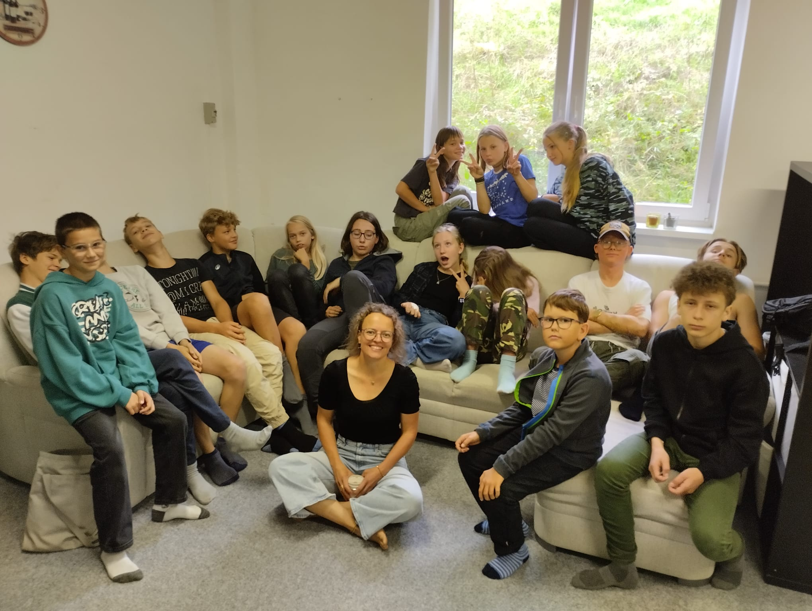

01
Kdo jsme?
16 dětí
Holky a kluci od 6. do 9. třídy
Rodiče – lektoři
Děti jsou vzdělávány lektory – rodiči. Většina z nich má pedagogické vzdělání, další přicházejí z jiných oblastí.
Externí hosté
Často si zveme na krátkodobé projekty hosty „zvenku“, kteří dětem sdílí své znalosti, zkušenosti a dovednosti z nejrůznějších oborů.